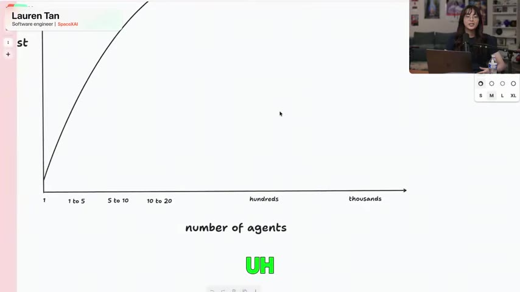
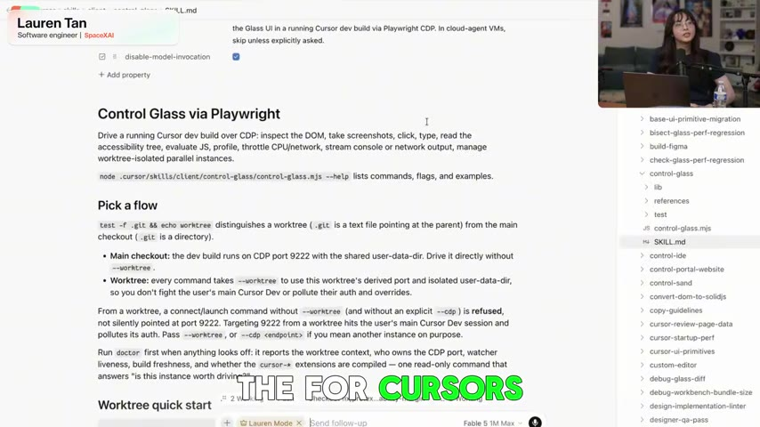

Source correction
This is not primarily a tutorial about running 20 GrokBot agents
The reupload title foregrounds “20+ GrokBot agents,” loops, goals, and a Chief of Staff. The underlying recording is Lauren Tan and Colin Matthews's Maven workshop, How Cursor Turned AI Agents Into Better Engineers. GrokBot appears near the end; most of the session teaches how to earn enough trust to delegate engineering work at all.
That distinction matters. The useful system is not “spawn more agents.” It is a progression: give one agent a way to observe real behavior, encode reusable engineering judgment as skills, test those skills with evals, reshape the codebase so correct changes are easier, and enforce non-negotiable constraints in CI. Parallelism comes after the evidence.
The workshop supports Lauren's personal PR counts and her engineering workflow. It does not substantiate the reupload description's company-wide claim that 85% of engineers run teams of 10+ GrokBots. This article does not repeat that statistic as fact.
Executive summary
The human bottleneck disappears only when verification becomes executable
Tan compares managing agents to managing engineers. If you distrust every result, you micromanage: one agent, one task, constant review. That mode may increase typing speed, but it cannot create real concurrency because the human remains the only verifier.
Her answer is to move engineering knowledge out of the reviewer's head and into the environment. A verification skill lets the agent run the product, inspect UI or runtime behavior, capture traces, and prove the original problem is gone. Skills preserve hard-won methods. Evals keep those skills from silently degrading. Architecture and CI make undesirable code difficult or impossible to merge.
Agent autonomy is not granted by confidence in the model. It is earned by shortening the loop between action, observable evidence, and enforceable standards.
The trust curve
Agent count should rise only after confidence in one agent rises
Tan describes starting with one to three local agents and personally reviewing everything. Over roughly five months, she moved toward agents producing and merging large numbers of changes while she increasingly reviewed behavior and architecture rather than every line.

The reupload emphasizes volume, but Tan repeatedly warns against jumping directly to hundreds or thousands of cloud agents. Without reliable checks, parallelism multiplies token spend, review work, and wrong answers.
The human watches the chat, reads every diff, reruns the app, explains failures, and becomes the queue through which all work must pass.
The agent can reproduce the issue, make a change, run the real product, collect evidence, satisfy CI, and leave a reviewable result.
Verification first
“Tests passed” is not proof that the user problem is fixed
Tan calls verification the most important skill in the toolbox. The exact mechanism depends on the product: browser automation and DOM inspection for web apps, simulators for mobile software, CPU and heap traces for performance work, logs and network inspection for distributed behavior.
The agent must interact with the same observable surface the user experiences. If the bug is duplicate messages, the evidence should show that duplicates no longer appear. A green unit test written by the same agent may be useful, but it does not replace behavioral proof.

Without this machinery, the human is the runtime. The agent asks the person to open the application, click around, report what happened, and decide whether the change worked. That arrangement cannot support unattended or parallel work.
Feature maps
Tool access is insufficient without navigation knowledge
Tan's early verification tool could technically control the application but often wandered because it did not understand how product concepts mapped to UI surfaces. She added a feature map describing routes, tabs, selectors, shortcuts, and the path to important functionality.
This is a form of context engineering. The map does not tell the model every click for every future task. It supplies stable orientation so the model spends its reasoning budget on the problem rather than rediscovering the application structure.
The same principle applies beyond UI testing: give agents a service map, ownership boundaries, canonical commands, data contracts, and failure signals. A large repository without a map forces every session to reconstruct institutional memory.
pstack and skills
Turn repeated corrections into reusable engineering methods
Tan built pstack incrementally by observing recurring agent failures. When an agent guessed instead of inspecting code, skipped a design step, or performed shallow debugging, she encoded the better procedure as a skill. This resembles coaching an employee: do not only fix today's output; teach a method that changes the next attempt.
The public pstack plugin describes the goal as writing less but higher-quality code. It packages workflows for investigation, architecture, implementation, review, testing, verification, and reflection. The value is not the slash-command syntax. It is the accumulated judgment inside each playbook and the routing logic that selects an appropriate process.
Skills also create leverage across models. A strong procedure can help a cheaper or faster model perform more reliably, while multi-model panels can assign mechanical code, prose, and architectural judgment to different strengths.
Evals as unit tests
A skill is production code and needs regression tests
Skills drift as they are edited, models change, and repositories evolve. Tan's mental model is direct: an eval is a unit test for an agent skill. A coordinator creates a rubric, delegates cases to isolated subagents, and scores the results. Separate directories and neutral naming reduce the chance that a worker changes behavior merely because it knows it is being evaluated.
Write the task and rubric.
Run cases in clean directories.
Test across relevant models.
Judge evidence, not confidence.
Improve and rerun the skill.
Tan applies the same idea to verification itself: test whether the verifier notices real failures, navigates correctly, and produces meaningful evidence. This guards against a dangerous false-confidence state where the agent says it checked the product but the checking procedure is broken.
Local before cloud
Scale observation only after the feedback loop works
Tan recommends beginning locally because the developer can directly observe what the agent does. Once the workflow reliably reproduces issues and verifies changes, cloud agents become powerful: they can run on persistent computers, respond to incoming signals, and work without occupying the developer's machine.
Her example is an agent that receives bug reports, opens its cloud desktop, runs the application, and attempts to reproduce the issue. Sometimes it discovers that the problem is already fixed on the main branch. The organization benefits because the result is reusable triage, not merely generated code.
The sequence is the lesson: local observability, repeatable verification, then cloud parallelism. Reversing that order creates an expensive fleet whose output still queues behind a human reviewer.
Agent-friendly codebases
Make the correct change the easiest change
Verification can show that behavior works, but it does not guarantee maintainable code. Tan argues that codebase architecture must carry taste and judgment that would otherwise live in senior reviewers' heads.
For GrokBot, she describes an internal architecture called Dune, roughly framed as a Next.js-like structure for Electron applications. It imposes strict boundaries and standard ways to build features. The point is not that every team should reproduce Dune; it is that agents perform better when modules have obvious ownership, narrow contracts, and a canonical path.
Tan reports more than 600 refactoring PRs while moving GrokBot toward this architecture. That number is self-reported throughput, not an independent quality metric. The deeper evidence is whether the resulting codebase reduces rework, escaped defects, review time, and performance regressions.
CI as executable taste
Do not ask a prompt to remember rules the repository can enforce
Tan describes strict CI rules, including banning React's
useEffect in the Dune codebase and rejecting most
ordinary code comments. Her rationale for comments is specific:
agents frequently produce historical narration that becomes stale
rather than clarifying the current invariant.
These choices are opinionated and context-dependent. The transferable pattern is to convert stable preferences into deterministic checks. Dependency direction, module size, forbidden APIs, schema compatibility, performance budgets, and accessibility requirements should not depend on whether a model remembered a style document.
Consumes context, can be forgotten, and produces inconsistent compliance across agents and sessions.
Applies to every contributor, fails immediately, and turns a subjective review comment into a repeatable contract.
Cost and ROI
Agent readiness is an upfront investment, not free velocity
Tan openly notes that she works in an environment with unusually generous token access. Refactoring a codebase, building skills, creating evals, and running verification loops can consume substantial compute before the workflow pays back.
PR count alone is a weak measure. A rational scorecard should include accepted work, cycle time, reviewer minutes, rework, escaped bugs, operational incidents, and cost per change. The investment makes sense when it creates durable throughput across future tasks and more contributors.
The GrokBot ending
Strict infrastructure can let non-engineers contribute safely
Near the end, Tan explains that an agent-friendly architecture and strict constraints can empower product managers, designers, and go-to-market colleagues to implement bounded changes. Their contribution is not safe because natural-language coding became infallible. It is safer because the system narrows valid implementations and rejects violations automatically.
This is the credible route from one coding assistant to a team of agents or broader organizational participation: a trusted engineering substrate underneath the conversational interface. A Chief of Staff agent or overnight loop is useful only when delegated work inherits those verification and policy layers.
Adoption playbook
Build the system in this order
- Choose one repetitive, observable engineering task with a clear finish condition.
- Teach the agent how to run the real product and collect behavioral evidence.
- Add a feature or service map so it can navigate without rediscovering the system.
- Turn repeated review feedback into focused, reusable skills.
- Create eval rubrics and run skills in isolated environments across the models you use.
- Refactor the repository toward clear boundaries and canonical implementation paths.
- Move stable rules from prose into CI, linters, types, and architecture checks.
- Measure accepted work and review burden before increasing agent count.
- Scale proven workflows to cloud agents, schedules, loops, and coordinators.
- Keep external sends, production changes, money movement, and irreversible actions behind approvals until evidence supports relaxing them.
Video map
Navigate the workshop
00:00 · Building trust in coding agents.
01:36 · From micromanagement toward autonomy.
03:36 · The trust curve and reported PR velocity.
06:36 · Verification through Control Glass.
11:08 · Feature maps and pstack.
17:30 · Evals as unit tests for skills.
23:52 · Local verification before cloud agents.
29:36 · Refactoring toward agent-friendly architecture.
38:24 · Dune and strict CI constraints.
47:34 · Token economics, ROI, and product-team empowerment.
Sources and method
Complete captions, corrected source identity, and qualified claims
The primary source is the complete 1,394-row English caption track for the supplied YouTube reupload, reaching 55:36 of a 55:39 video. The video's descriptive title was checked against the original Maven listing for How Cursor Turned AI Agents Into Better Engineers.
pstack's purpose and authorship were checked against the public Cursor plugin repository. The screenshots are frames from the supplied reupload. The eval-loop, architecture diagram, cautions about metrics, and adoption checklist are editorial synthesis grounded in the workshop.
Company-wide adoption percentages and viral descriptions of a fixed 20-agent hierarchy were not treated as verified facts because the accessible first-party workshop and repository do not establish them.